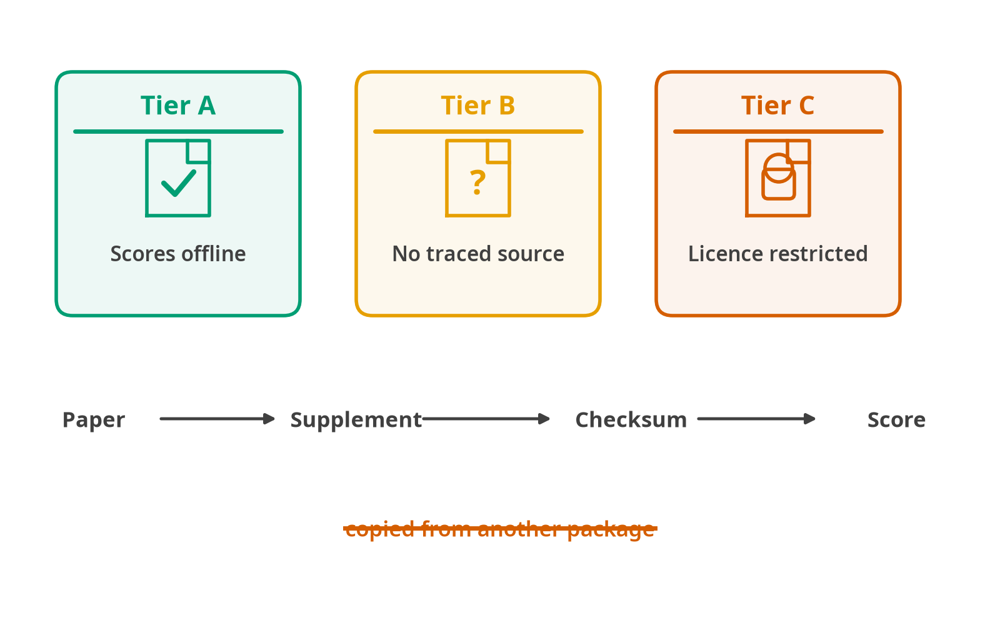

Clock catalogue
All 161, generated from the registry that scores them
This page is written from the registry the package ships, so it cannot describe a catalogue different from the one that scores. Every column below is a field the scoring code reads.
scale_type is the load-bearing one. It is not a label: it decides which downstream operations FALCONAge will perform, and asking for age acceleration on a pace_ratio clock is refused rather than computed.
161 clocks, registry schema 1.1.0.

The tiers are about provenance, not about quality. A tier A clock has a coefficient file whose origin was followed back to the paper or its supplement and checksummed, so the same numbers come out on any machine with no network. Tier B has no traced public source for its coefficients, and tier C has one that its licence will not let this package redistribute. Copying a coefficient vector out of another package would move clocks up a tier and is the one route not taken here, because a number with no source behind it cannot be checked against anything.
Tier A: 46 clocks
Coefficients ship with the package, or the clock is a formula with none to ship. Works offline, no network, no licence.
| Clock | Year | Predicts | Scale | Features | Tissue | Platform | Paper |
|---|---|---|---|---|---|---|---|
altumage |
2022 | chronological age | age_years |
20318 | multi-tissue | 27K, 450K | de Lima Camillo 2022 |
corticalclock |
2020 | chronological age | age_years |
347 | brain cortex | 450K | Shireby 2020 |
dnamphenoage |
2018 | phenotypic age | age_years |
513 | whole blood | 27K, 450K, EPICv1 | Levine 2018 |
dnamtl |
2019 | leukocyte telomere length | telomere_kb |
140 | whole blood | 450K, EPICv1 | Lu 2019 |
dunedinpoam38 |
2020 | pace of aging | pace_ratio |
46 | whole blood | 450K | Belsky 2020 |
epicmithyper |
2020 | mitotic age | divisions |
184 | B cells | 450K, EPICv1 | Duran-Ferrer 2020 |
epicmithypo |
2020 | mitotic age | divisions |
1164 | B cells | 450K, EPICv1 | Duran-Ferrer 2020 |
epitoc1 |
2016 | mitotic age | divisions |
385 | multi-tissue, whole blood | 450K | Yang 2016 |
epitoc2 |
2020 | mitotic age | divisions |
163 | whole blood | 450K | Teschendorff 2020 |
epitoc3 |
2020 | mitotic age | divisions |
170 | cultured primary human cells, whole blood, multi-tissue, cord blood | 450K, EPICv1 | Teschendorff 2020 |
hannum |
2013 | chronological age | age_years |
71 | whole blood | 450K | Hannum 2013 |
hd |
2013 | physiological dysregulation | relative_score |
— | blood | clinical laboratory assays | Cohen 2013 |
horvath2013 |
2013 | chronological age | age_years |
353 | multi-tissue | 27K, 450K | Horvath 2013 |
hrsinchphenoage |
2022 | phenotypic age | age_years |
959 | whole blood | 450K, EPICv1 | Higgins-Chen 2022 |
hypoclock |
2020 | mitotic age | divisions |
678 | multi-tissue | 450K | Teschendorff 2020 |
kdm |
2006 | biological age | age_years |
— | blood | clinical laboratory assays | Klemera 2006 |
knight |
2016 | gestational age | gestational_weeks |
148 | cord blood, neonatal blood spots | 27K, 450K | Knight 2016 |
leecontrol |
2019 | gestational age | gestational_weeks |
546 | placenta | 450K, EPICv1 | Lee 2019 |
leerefinedrobust |
2019 | gestational age | gestational_weeks |
395 | placenta | 450K, EPICv1 | Lee 2019 |
leerobust |
2019 | gestational age | gestational_weeks |
558 | placenta | 450K, EPICv1 | Lee 2019 |
lin |
2016 | chronological age | age_years |
99 | whole blood | 27K, 450K | Lin 2016 |
mccartneyalcohol |
2018 | alcohol consumption | gestational_weeks |
450 | whole blood | EPICv1 | McCartney 2018 |
mccartneybmi |
2018 | body mass index | relative_score |
1109 | whole blood | EPICv1 | McCartney 2018 |
mccartneybodyfat |
2018 | body fat percentage | relative_score |
968 | whole blood | EPICv1 | McCartney 2018 |
mccartneyeducation |
2018 | educational attainment | relative_score |
373 | whole blood | EPICv1 | McCartney 2018 |
mccartneyhdlcholesterol |
2018 | HDL cholesterol | relative_score |
737 | whole blood | EPICv1 | McCartney 2018 |
mccartneyldlcholesterol |
2018 | LDL cholesterol | relative_score |
233 | whole blood | EPICv1 | McCartney 2018 |
mccartneysmoking |
2018 | smoking exposure | relative_score |
233 | whole blood | EPICv1 | McCartney 2018 |
mccartneytotalcholesterol |
2018 | total cholesterol | relative_score |
204 | whole blood | EPICv1 | McCartney 2018 |
mccartneytotalhdlratio |
2018 | total-to-HDL cholesterol ratio | relative_score |
412 | whole blood | EPICv1 | McCartney 2018 |
mccartneywhr |
2018 | waist-to-hip ratio | relative_score |
226 | whole blood | EPICv1 | McCartney 2018 |
meer |
2018 | chronological age | age_years |
435 | multi-tissue | RRBS | Meer 2018 |
pedbe |
2020 | chronological age | age_years |
94 | buccal epithelium | 450K, EPICv1 | McEwen 2020 |
phenoage |
2018 | phenotypic age | age_years |
10 | blood | clinical laboratory assays | Levine 2018 |
replitali |
2022 | replicative history | divisions |
87 | cultured primary human cells | EPICv1 | Endicott 2022 |
skinandblood |
2018 | chronological age | age_years |
391 | buccal epithelium, whole blood, epithelium, cultured fibroblasts, skin, cord blood | 450K, EPICv1 | Horvath 2018 |
stemtoc |
2024 | mitotic age | divisions |
371 | multi-tissue, cultured human cells, whole blood | 450K, EPICv1 | Zhu 2024 |
stemtocvitro |
2024 | mitotic age | divisions |
629 | multi-tissue, cultured human cells | 450K, EPICv1 | Zhu 2024 |
vidalbralo |
2016 | chronological age | age_years |
8 | whole blood | 27K | Vidal-Bralo 2016 |
weidner |
2014 | biological age | age_years |
3 | whole blood | 27K, bisulfite sequencing | Weidner 2014 |
yingadaptage |
2024 | adaptive epigenetic age | age_years_relative |
999 | whole blood | 450K | Ying 2024 |
yingcausage |
2024 | chronological age | age_years |
585 | whole blood | 450K | Ying 2024 |
yingdamage |
2024 | damaging epigenetic age | age_years_relative |
1089 | whole blood | 450K | Ying 2024 |
zhangblup |
2019 | chronological age | age_years |
319607 | whole blood, saliva | 450K, EPICv1 | Zhang 2019 |
zhangen |
2019 | chronological age | age_years |
514 | whole blood, saliva | 450K, EPICv1 | Zhang 2019 |
zhangmortality |
2017 | mortality risk | mortality_log_hazard |
10 | whole blood | 450K | Zhang 2017 |
Tier B: 87 clocks
Catalogued, but no primary source for the coefficients has been established, so nothing is bundled. The metadata is real; the numbers are absent.
| Clock | Year | Predicts | Scale | Features | Tissue | Platform | Paper |
|---|---|---|---|---|---|---|---|
abec |
2020 | chronological age | age_years |
— | whole blood | EPICv1 | Lee 2020 |
adbahadosingh |
2021 | late-onset Alzheimer’s disease | relative_score |
— | whole blood | EPICv1 | Bahado-Singh 2021 |
bocklandt |
2011 | EDARADD methylation | relative_score |
— | saliva | 27K | Bocklandt 2011 |
bohlin |
2016 | gestational age | gestational_weeks |
— | cord blood | 450K | Bohlin 2016 |
cabec |
2020 | chronological age | age_years |
— | whole blood | 450K, EPICv1 | Lee 2020 |
cellpopage |
2024 | cell-population passage age | relative_score |
— | cultured fibroblasts | EPICv1 | Lujan 2024 |
compil6 |
2021 | interleukin-6 | relative_score |
— | whole blood | 450K | Stevenson 2021 |
ctsliver |
2024 | chronological age | age_years |
— | liver | EPICv1 | Tong 2024 |
cvdwesterman |
2020 | cardiovascular disease risk | relative_score |
— | whole blood | 450K | Westerman 2020 |
deconvolutebloodepicbcell |
2018 | B cell proportion | proportion |
— | purified blood leukocytes | EPICv1 | Salas 2018 |
deconvolutebloodepiccd4tcell |
2018 | CD4+ T cell proportion | proportion |
— | purified blood leukocytes | EPICv1 | Salas 2018 |
deconvolutebloodepiccd8tcell |
2018 | CD8+ T cell proportion | proportion |
— | purified blood leukocytes | EPICv1 | Salas 2018 |
deconvolutebloodepicmonocyte |
2018 | monocyte proportion | proportion |
— | purified blood leukocytes | EPICv1 | Salas 2018 |
deconvolutebloodepicneutrophil |
2018 | neutrophil proportion | proportion |
— | purified blood leukocytes | EPICv1 | Salas 2018 |
deconvolutebloodepicnkcell |
2018 | natural killer cell proportion | proportion |
— | purified blood leukocytes | EPICv1 | Salas 2018 |
depressionbarbu |
2021 | major depressive disorder | relative_score |
— | whole blood | EPICv1 | Barbu 2021 |
dnamfili |
2022 | frailty risk | relative_score |
— | whole blood | EPICv1, 450K | Li 2022 |
dnamfitage |
2023 | physical-fitness biological age | age_years |
— | whole blood | 450K | McGreevy 2023 |
dnamfitagegaitf |
2023 | gait speed | relative_score |
— | whole blood | 450K | McGreevy 2023 |
dnamfitagegaitm |
2023 | gait speed | relative_score |
— | whole blood | 450K | McGreevy 2023 |
dnamfitagegripf |
2023 | grip strength | relative_score |
— | whole blood | 450K | McGreevy 2023 |
dnamfitagegripm |
2023 | grip strength | relative_score |
— | whole blood | 450K | McGreevy 2023 |
dnamfitagevo2max |
2023 | VO2max | relative_score |
— | whole blood | 450K | McGreevy 2023 |
dnamic |
2025 | intrinsic capacity | relative_score |
— | whole blood | EPICv1 | Fuentealba 2025 |
dnamstress |
2023 | stress exposure | relative_score |
— | whole blood | EPICv1 | Jung 2023 |
downsyndrome |
2021 | Down syndrome methylation score | relative_score |
— | neonatal blood spots | EPICv1 | Muskens 2021 |
eabec |
2020 | chronological age | age_years |
— | whole blood | EPICv1 | Lee 2020 |
encen100 |
2023 | chronological age | age_years |
— | whole blood, saliva, buccal epithelium | 450K, EPICv1 | Dec 2023 |
encen40 |
2023 | chronological age | age_years |
— | whole blood, saliva, buccal epithelium | 450K, EPICv1 | Dec 2023 |
ensembleagehumanmouse |
2025 | relative age | relative_score |
— | multi-tissue, whole blood | mammalian methylation array | Haghani 2025 |
ensembleagestatic |
2025 | intervention-responsive epigenetic age | age_years |
— | multi-tissue | Horvath MammalMethylChip40, Horvath MammalMethylChip320 | Haghani 2025 |
ensembleagestatictop |
2025 | intervention-responsive epigenetic age | age_years |
— | multi-tissue | Horvath MammalMethylChip40, Horvath MammalMethylChip320 | Haghani 2025 |
epicga |
2021 | gestational age | gestational_weeks |
— | cord blood | EPICv1 | Haftorn 2021 |
garagnani |
2012 | ELOVL2 methylation | relative_score |
— | whole blood | 450K | Garagnani 2012 |
gliasin |
2024 | chronological age | age_years |
— | brain cortex | 450K | Tong 2024 |
han |
2020 | chronological age | age_years |
— | whole blood | 450K | Han 2020 |
hep |
2024 | chronological age | age_years |
— | liver | EPICv1 | Tong 2024 |
hepatoxu |
2017 | hepatocellular carcinoma | relative_score |
— | plasma cell-free DNA | targeted bisulfite sequencing | Xu 2017 |
intrinclock |
2024 | chronological age | age_years |
— | multi-tissue | 450K, EPICv1 | Tomusiak 2024 |
mammalian1 |
2023 | chronological age | age_years |
— | multi-tissue | Horvath MammalMethylChip40 | Lu 2023 |
mammalian2 |
2023 | chronological age | age_years |
— | multi-tissue | Horvath MammalMethylChip40 | Lu 2023 |
mammalian3 |
2023 | chronological age | age_years |
— | multi-tissue | Horvath MammalMethylChip40 | Lu 2023 |
mammalianblood2 |
2023 | chronological age | age_years |
— | blood | Horvath MammalMethylChip40 | Lu 2023 |
mammalianblood3 |
2023 | chronological age | age_years |
— | blood | Horvath MammalMethylChip40 | Lu 2023 |
mammalianfemale |
2023 | sex | relative_score |
— | multi-tissue | mammalian methylation array | Li 2023 |
mammalianlifespan |
2024 | species maximum lifespan | age_years |
— | multi-tissue | Horvath MammalMethylChip40 | Li 2024 |
mammalianskin2 |
2023 | chronological age | age_years |
— | skin | Horvath MammalMethylChip40 | Lu 2023 |
mammalianskin3 |
2023 | chronological age | age_years |
— | skin | Horvath MammalMethylChip40 | Lu 2023 |
mayne |
2017 | gestational age | gestational_weeks |
— | placenta | 27K, 450K | Mayne 2017 |
neusin |
2024 | chronological age | age_years |
— | brain cortex | 450K | Tong 2024 |
pcdnamtl |
2022 | leukocyte telomere length | telomere_kb |
— | whole blood | 450K | Higgins-Chen 2022 |
pchannum |
2022 | chronological age | age_years |
— | whole blood | 450K | Higgins-Chen 2022 |
pchorvath2013 |
2022 | chronological age | age_years |
— | multi-tissue | 450K, EPICv1 | Higgins-Chen 2022 |
pcphenoage |
2022 | phenotypic age | age_years |
— | whole blood | 450K, EPICv1 | Higgins-Chen 2022 |
pcskinandblood |
2022 | chronological age | age_years |
— | skin, whole blood, cultured fibroblasts | 450K, EPICv1 | Higgins-Chen 2022 |
petkovich |
2017 | chronological age | age_years |
— | whole blood | bisulfite sequencing | Petkovich 2017 |
pipekelasticnet |
2022 | chronological age | age_years |
— | multi-tissue | 27K, 450K, EPICv1 | Pipek 2022 |
pipekfilteredh |
2022 | chronological age | age_years |
— | multi-tissue | 27K, 450K, EPICv1 | Pipek 2022 |
pipekretrainedh |
2022 | chronological age | age_years |
— | multi-tissue | 27K, 450K, EPICv1 | Pipek 2022 |
prostatecancerkirby |
2017 | prostate cancer | relative_score |
— | prostate | 450K | Kirby 2017 |
reedbmi |
2020 | BMI methylation score | relative_score |
— | whole blood, cord blood | 450K | Reed 2020 |
replitalinorm |
2022 | replicative history | divisions |
— | cultured fibroblasts | EPICv1 | Endicott 2022 |
retroelementagev1 |
2024 | chronological age | age_years |
— | whole blood | EPICv1 | Ndhlovu 2024 |
retroelementagev2 |
2024 | chronological age | age_years |
— | whole blood | EPICv1 | Ndhlovu 2024 |
senchronoage |
2026 | chronological age | age_years |
— | whole blood | 450K, EPICv1 | Kasamoto 2026 |
sencultureage |
2026 | cellular senescence | relative_score |
— | cultured fibroblasts, cultured mesenchymal stromal cells | 450K, EPICv1 | Kasamoto 2026 |
senmortalityage |
2026 | mortality risk | mortality_log_hazard |
— | whole blood | 450K, EPICv1 | Kasamoto 2026 |
stoch |
2024 | chronological age | age_years |
— | sorted monocytes | 450K | Tong 2024 |
stocp |
2024 | chronological age | age_years |
— | sorted monocytes | 450K | Tong 2024 |
stocz |
2024 | chronological age | age_years |
— | sorted monocytes | 450K | Tong 2024 |
stubbs |
2017 | chronological age | age_years |
— | multi-tissue, liver, lung, heart, brain cortex, skeletal muscle, cerebellum, spleen | RRBS | Stubbs 2017 |
thompson |
2018 | chronological age | age_years |
— | adipose tissue, blood, cerebellum, brain cortex, heart, kidney, liver, lung, skeletal muscle, spleen | RRBS | Thompson 2018 |
twelvecelldeconvolutebloodepicbas |
2022 | basophil proportion | proportion |
— | purified blood leukocytes | EPICv1 | Salas 2022 |
twelvecelldeconvolutebloodepicbmem |
2022 | memory B cell proportion | proportion |
— | purified blood leukocytes | EPICv1 | Salas 2022 |
twelvecelldeconvolutebloodepicbnv |
2022 | naive B cell proportion | proportion |
— | purified blood leukocytes | EPICv1 | Salas 2022 |
twelvecelldeconvolutebloodepiccd4mem |
2022 | memory CD4+ T cell proportion | proportion |
— | purified blood leukocytes | EPICv1 | Salas 2022 |
twelvecelldeconvolutebloodepiccd4nv |
2022 | naive CD4+ T cell proportion | proportion |
— | purified blood leukocytes | EPICv1 | Salas 2022 |
twelvecelldeconvolutebloodepiccd8mem |
2022 | memory CD8+ T cell proportion | proportion |
— | purified blood leukocytes | EPICv1 | Salas 2022 |
twelvecelldeconvolutebloodepiccd8nv |
2022 | naive CD8+ T cell proportion | proportion |
— | purified blood leukocytes | EPICv1 | Salas 2022 |
twelvecelldeconvolutebloodepiceos |
2022 | eosinophil proportion | proportion |
— | purified blood leukocytes | EPICv1 | Salas 2022 |
twelvecelldeconvolutebloodepicmono |
2022 | monocyte proportion | proportion |
— | purified blood leukocytes | EPICv1 | Salas 2022 |
twelvecelldeconvolutebloodepicneu |
2022 | neutrophil proportion | proportion |
— | purified blood leukocytes | EPICv1 | Salas 2022 |
twelvecelldeconvolutebloodepicnk |
2022 | natural killer cell proportion | proportion |
— | purified blood leukocytes | EPICv1 | Salas 2022 |
twelvecelldeconvolutebloodepictreg |
2022 | regulatory T-cell proportion | proportion |
— | purified blood leukocytes | EPICv1 | Salas 2022 |
wu |
2019 | chronological age | age_years |
— | whole blood | 27K, 450K | Wu 2019 |
xchrom |
2021 | X-chromosome dosage | relative_score |
— | whole blood | 450K, EPICv1 | Wang 2021 |
ychrom |
2021 | Y-chromosome presence | relative_score |
— | whole blood | 450K, EPICv1 | Wang 2021 |
Tier C: 28 clocks
The architecture is implemented and tested; the coefficients are research-use-only and are not ours to distribute. Obtain a file and register it.
| Clock | Year | Predicts | Scale | Features | Tissue | Platform | Paper |
|---|---|---|---|---|---|---|---|
cpgptgrimage3 |
2024 | biological age | age_years |
— | whole blood | 450K | de Lima Camillo 2024 |
cpgptpcgrimage3 |
2024 | biological age | age_years |
— | whole blood | 450K | de Lima Camillo 2024 |
dunedinpace |
2022 | pace of aging | pace_ratio |
— | whole blood | EPICv1 | Belsky 2022 |
grimage |
2019 | mortality risk | age_years |
— | whole blood | 450K | Lu 2019 |
grimage2 |
2022 | mortality risk | age_years |
— | whole blood | 450K | Lu 2022 |
grimage2adm |
2022 | adrenomedullin | relative_score |
— | whole blood | 450K | Lu 2022 |
grimage2b2m |
2022 | beta-2-microglobulin | relative_score |
— | whole blood | 450K | Lu 2022 |
grimage2cystatinc |
2022 | cystatin C | relative_score |
— | whole blood | 450K | Lu 2022 |
grimage2gdf15 |
2022 | GDF-15 | relative_score |
— | whole blood | 450K | Lu 2022 |
grimage2leptin |
2022 | leptin | relative_score |
— | whole blood | 450K | Lu 2022 |
grimage2loga1c |
2022 | hemoglobin A1c | relative_score |
— | whole blood | 450K | Lu 2022 |
grimage2logcrp |
2022 | C-reactive protein | relative_score |
— | whole blood | 450K | Lu 2022 |
grimage2packyrs |
2022 | smoking exposure | relative_score |
— | whole blood | 450K | Lu 2022 |
grimage2pai1 |
2022 | PAI-1 | relative_score |
— | whole blood | 450K | Lu 2022 |
grimage2timp1 |
2022 | TIMP-1 | relative_score |
— | whole blood | 450K | Lu 2022 |
pcgrimage |
2022 | mortality risk | age_years |
— | whole blood | 450K | Higgins-Chen 2022 |
systemsage |
2025 | multisystem biological age | age_years |
— | whole blood | 450K, EPICv1 | Sehgal 2025 |
systemsageblood |
2025 | blood-system biological age | age_years |
— | whole blood | 450K, EPICv1 | Sehgal 2025 |
systemsagebrain |
2025 | brain-system biological age | age_years |
— | whole blood | 450K, EPICv1 | Sehgal 2025 |
systemsageheart |
2025 | cardiovascular-system biological age | age_years |
— | whole blood | 450K, EPICv1 | Sehgal 2025 |
systemsagehormone |
2025 | endocrine-system biological age | age_years |
— | whole blood | 450K, EPICv1 | Sehgal 2025 |
systemsageimmune |
2025 | immune-system biological age | age_years |
— | whole blood | 450K, EPICv1 | Sehgal 2025 |
systemsageinflammation |
2025 | inflammatory-system biological age | age_years |
— | whole blood | 450K, EPICv1 | Sehgal 2025 |
systemsagekidney |
2025 | renal-system biological age | age_years |
— | whole blood | 450K, EPICv1 | Sehgal 2025 |
systemsageliver |
2025 | hepatic-system biological age | age_years |
— | whole blood | 450K, EPICv1 | Sehgal 2025 |
systemsagelung |
2025 | pulmonary-system biological age | age_years |
— | whole blood | 450K, EPICv1 | Sehgal 2025 |
systemsagemetabolic |
2025 | metabolic-system biological age | age_years |
— | whole blood | 450K, EPICv1 | Sehgal 2025 |
systemsagemusculoskeletal |
2025 | musculoskeletal-system biological age | age_years |
— | whole blood | 450K, EPICv1 | Sehgal 2025 |
Querying it from code
reg = fa.registry.load()
reg.filter(availability="A", scale_type="age_years")
reg.search("mortality")
reg.compatible_with(data)
reg.get("horvath2013")list_clocks(tier = "A")
list_clocks(search = "mortality")
compatible_clocks(d)
clock_info("horvath2013")